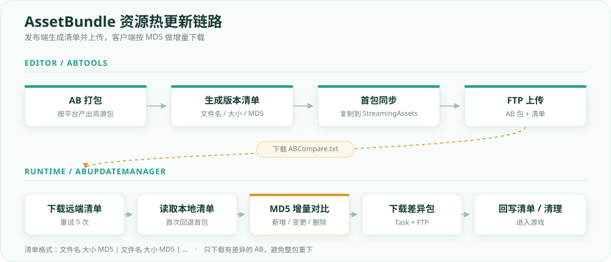
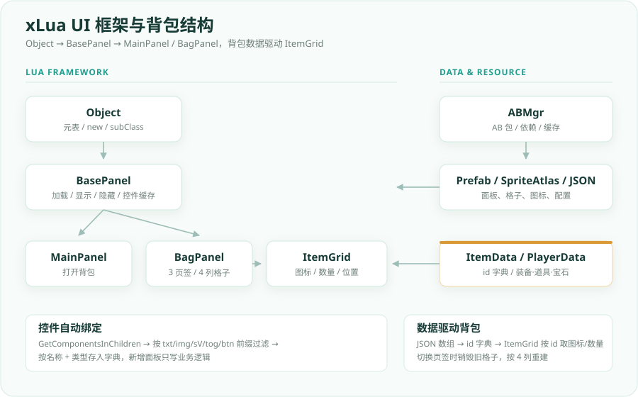

01
2026.09
RESOURCE PIPELINE
AssetBundle 资源热更新系统
Editor 端生成版本清单并上传，客户端按 MD5 做增量比对，只下载差异 AB； FTP + Task 异步下载，带重试、进度与旧包清理。
UNITY CLIENT DEVELOPER · 2026
把资源管线、UI 框架和玩法系统，做成可维护、可复用的客户端模块。 关注 AssetBundle、xLua、UGUI 与工程化工具。
public class ABUpdateManager : MonoBehaviour
{
public async void CheckUpdate()
{
// 1. 下载远端版本清单
await Task.Run(() => DownLoadManifest());
// 2. 按 MD5 对比本地清单
CompareManifest();
// 3. 只下载差异 AB
await Task.Run(() => DownLoadDiff());
}
}01 / SELECTED WORK
优先展示框架与工具类项目：它们更能体现结构设计、资源管理和工程化意识。
02 / RESOURCE PIPELINE
这是资源热更新，不是 C# 代码热更新。重点在“版本清单 + MD5 增量 + 异步下载 + 旧包清理”这一套链路。

EditorWindow 收敛平台切换、清单生成、首包同步和 FTP 上传。StreamingAssets，后续读取 persistentDataPath。FTP + Task 异步下载，最多 5 轮重试，带进度与结果回调。客户端不猜版本，只按清单里的 MD5 判断：没有就新增，不同就更新，相同就跳过。
FTP 和文件读写放进 Task.Run，await 回到主线程再回调 UI。
远端遍历完后，本地剩下的 key 就是已下线资源，直接从 persistentDataPath 删除。
ABUpdateManagerABInfoABToolsMain
03 / UI FRAMEWORK
把面板生命周期、控件绑定、Lua 打包和背包数据拆成可复用的层次，减少每个面板重复写加载和查找。
Object → BasePanel 两级继承，统一面板加载、显示、隐藏。GetComponentsInChildren，按 txt/img/sV/tog/btn 前缀自动扫描控件。.txt 并自动设置 AssetBundle 标签。id 字典，ItemGrid 只依赖 id 取图标和数量。
控件按前缀命名即可被扫描到，新增面板不用手写一堆 Find。
JSON 只提供 id、图标名、数量；ItemGrid 负责把数据变成格子。
同一套 prefab 和图集服务三个页签，切换时销毁旧格子、按 4 列重建。
ObjectBasePanelBagPanelItemGridItemData
04 / MORE DEMOS
除了框架项目，也做过完整的玩法循环和 UGUI 业务界面。
TankBaseObj 统一伤害与死亡；怪物 AI 用随机路径点 + 射程 / 攻击间隔状态机；泛型 UIManager 管理面板；另含登录、注册、选服面板。
3D 塔防：选角 / 解锁、造塔点、3 种防御塔与升级链；怪物通过 NavMeshAgent 按波次进攻；塔与怪物参数走 JSON 配置。
05 / CODE SAMPLES
只保留关键脚本，已移除 FTP 账号、服务器地址等敏感信息。
06 / ABOUT
这些项目来自课程学习与个人复现。我把它们重新整理成可阅读的文档和代码样例， 重点补上“为什么这样做”和“哪里还可以更好”，而不是只停留在功能演示。
目前关注 Unity 客户端开发、资源管线与 UI 框架；如果你正在找 2026 届 Unity 客户端开发， 欢迎通过 GitHub 联系我。